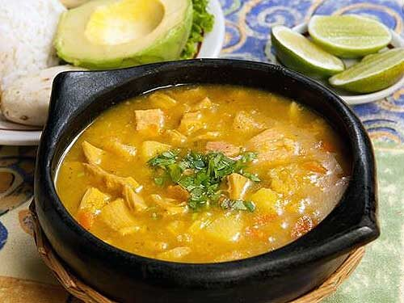
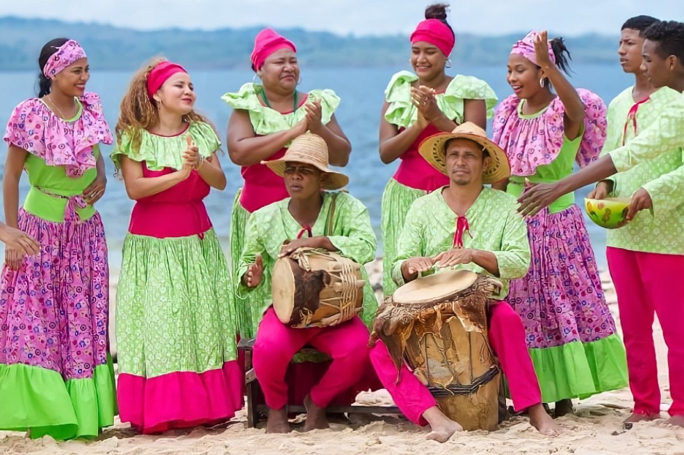
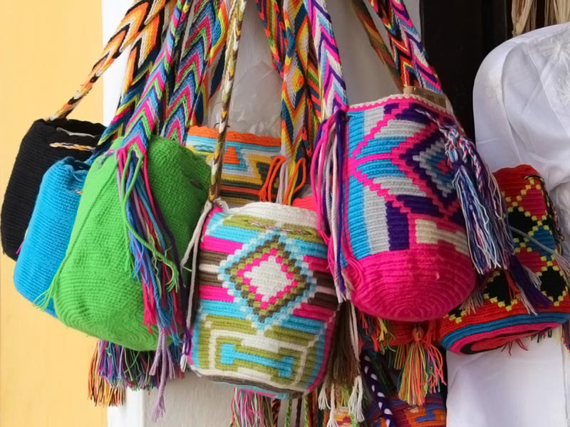
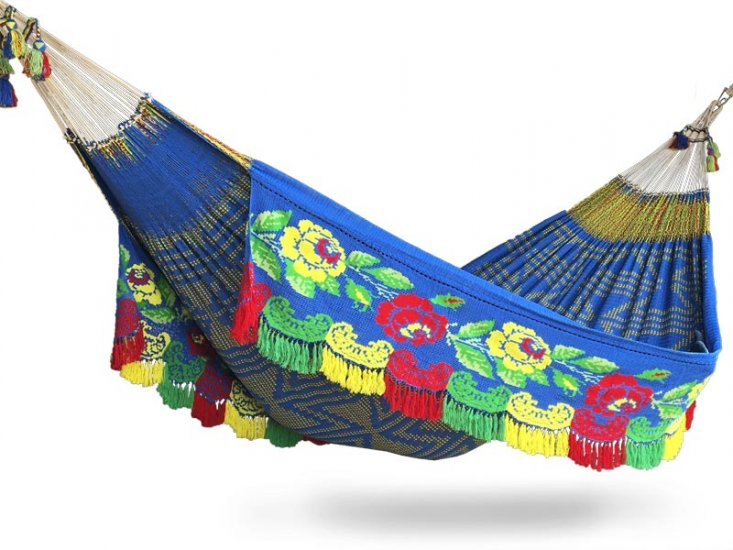

Aspectos Culturales
Gastronomía
Santa Marta, la ciudad más antigua de Colombia, te enamora no solo con sus playas paradisíacas e historia colonial, sino también con su deliciosa y diversa gastronomía. Un viaje a este tesoro del Caribe no estaría completo sin sumergirse en los sabores que reflejan la mezcla cultural de la región.
La cocina samaria se caracteriza por la influencia afrocolombiana e indígena, presente en cada ingrediente y preparación. El plátano verde, conocido como guineo, es un protagonista indiscutible, presente en platos como el cayeye, un guiso sustancioso a base de guineo verde, y el patacón, plátano verde frito hasta quedar crujiente.

Santa Marta, bañada por el mar Caribe, ofrece una variedad de pescados y mariscos frescos. Disfruta de un pescado frito crujiente acompañado de patacón, o atrévete con un coctel de camarón, una mezcla refrescante de camarones, cebolla, tomate y limón.

Para reconfortarte, nada mejor que una sopa de pescado, elaborada con calamares, camarones y el sabor inigualable del coco. El arroz de coco con guiso de mariscos o carne es otro clásico que no puedes perderte.
No te despidas de Santa Marta sin probar sus dulces típicos. La cocada, elaborada con coco rallado, leche condensada y azúcar, es un manjar irresistible. Las arepas dulces, hechas con harina de maíz y azúcar, son perfectas para un desayuno o una merienda.
Folclor
Santa Marta, la ciudad más antigua de Colombia, no solo te cautiva con sus playas paradisíacas e historia colonial, sino también con su vivo y rico folclor. Un viaje a este tesoro del Caribe estaría incompleto sin sumergirse en las tradiciones, bailes, música y expresiones culturales que le dan identidad a esta región.
Cumbia:El ritmo más emblemático de Colombia, con su alegre mezcla de tambores, gaitas y maracas. Las mujeres, vestidas de blanco y adornadas con flores, representan la elegancia, mientras que los hombres, con atuendos coloridos, representan la fuerza y la alegría.
Mapalé: Un baile sensual y acrobático originario de las comunidades afrodescendientes, que celebra la fertilidad y la vida. Se caracteriza por sus movimientos rápidos y cadenciosos, acompañados por el ritmo contagioso de los tambores.
Bullerengue: Un canto a capella que expresa la cotidianidad, las alegrías y las penas del pueblo afrocolombiano. Se caracteriza por su ritmo improvisado y su profunda carga emocional.
Leyendas: Relatos fantásticos que se transmiten de generación en generación, explicando el origen del mundo, la creación de los animales y otros fenómenos naturales. Las leyendas samarias están llenas de magia, misticismo y personajes fantásticos.
Fiestas y Celebraciones
Santa Marta vibra a lo largo del año con diferentes fiestas y celebraciones que rinden homenaje a sus tradiciones y patronos. Entre las más populares se encuentran el Festival del Vallenato, el Festival de la Cumbia y las Fiestas de Santa Marta.

Artesanías
Santa Marta, la ciudad más antigua de Colombia, no solo enamora con sus playas paradisíacas y su rica historia, sino también con la belleza y la variedad de sus artesanías. Estas piezas únicas, elaboradas con amor y dedicación por manos expertas.
Productos Típicos:
Mochilas Wayuu: Tejidas a mano por las mujeres Wayuu, estas mochilas son conocidas por sus diseños coloridos y geométricos.
Sombreros vueltiao: Fabricados con caña flecha, estos sombreros son un símbolo de la cultura colombiana.
Chinchorros: Hamacas tradicionales hechas de algodón o fique, perfectas para descansar o dormir.
Máscaras: Talladas en madera, las máscaras representan figuras mitológicas y animales.
Joyería: Piezas elaboradas en oro, plata y cobre, con diseños inspirados en la naturaleza y la cultura indígena.
Tradiciones
Santa Marta, ubicada en la costa caribeña de Colombia, es una ciudad con una rica historia y cultura que se refleja en sus diversas tradiciones. Estas tradiciones, transmitidas de generación en generación, forman parte integral de la identidad de la ciudad y de su gente.
Fiesta de Santa Marta: Celebrada cada 29 de julio, esta fiesta es la más importante de la ciudad en honor a su patrona. Se realizan procesiones religiosas, conciertos, bailes y actividades culturales.
Semana Santa: En Santa Marta, la Semana Santa se vive con fervor religioso. Se realizan procesiones por las calles de la ciudad, se visitan los siete monumentos y se asiste a misas especiales.
Carnaval de Santa Marta: Aunque no es tan conocido como el carnaval de Barranquilla, el Carnaval de Santa Marta es una fiesta llena de alegría, color y música. Se realizan desfiles de comparsas, bailes tradicionales y conciertos.